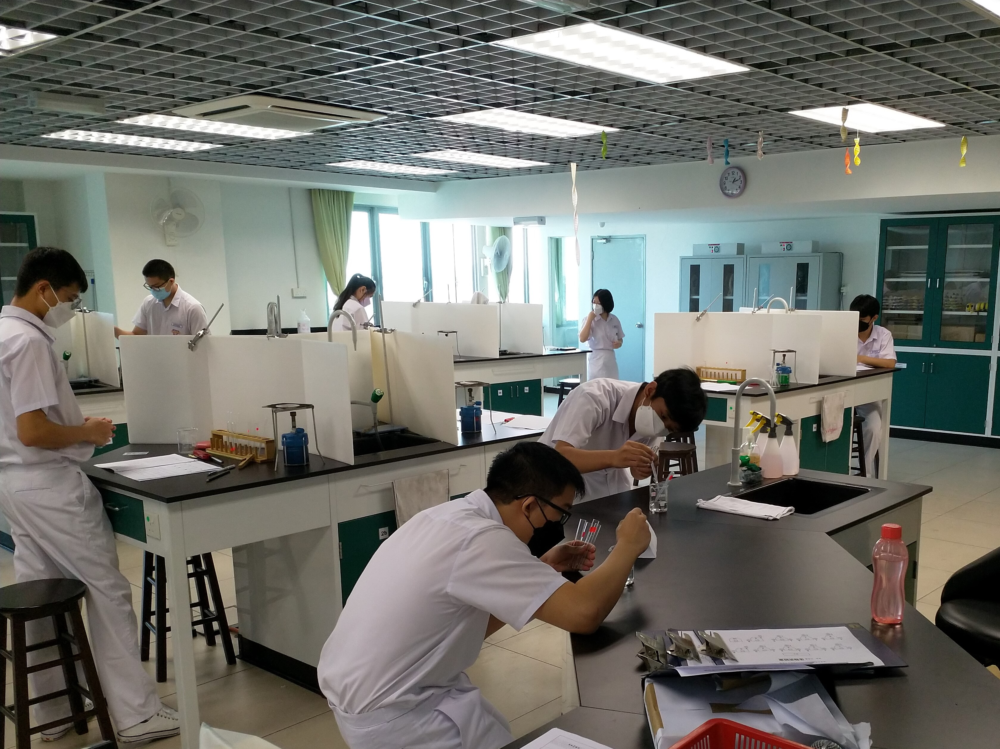
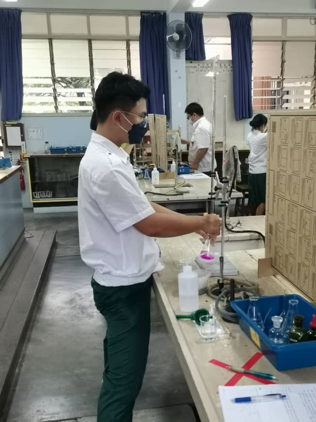
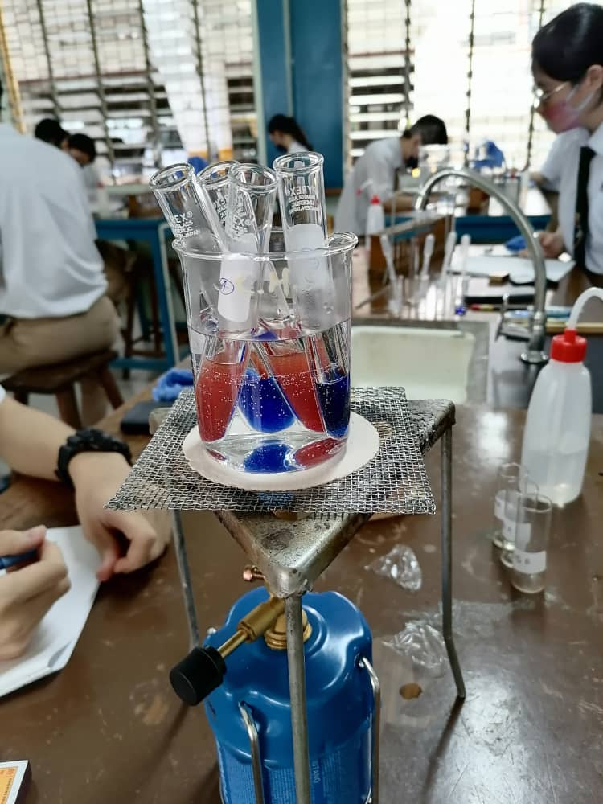

华文独中高中理科实验评量试行简报
高中理科实验评量是为了配合即将试行的《马来西亚华文独立中学课程总纲》，尤其是对应9项核心素养中的“创意思维与解决问题”项目，既致力于培养具备探究、批判与推理能力，并能发挥创新精神，掌握自主学习技能去解决生活与生命问题，并作出决策，以回应社会变化。
推动高中统考理科实验评量的目的，主要是提高学生的整体科学素养，尤其是科学实验操作方法的能力，以及培养学生追求真理，尊重实证与客观事实，具有批判思想和好奇心，勇于探索的精神，以及对环境变化敏感等科学态度。此举可培养高中理科生的探究与实作能力，以解决一般大众对于高中理科生，在实验操作能力薄弱的刻板印象，并加强学生应对工业4.0和人工智能时代的挑战。
原订于2020年展开的小规模理科实验评量试行计划，因为新冠疫情爆发，而被迫延后至2022年进行。在政府SPM公共考试完毕后，华文独中高中理科实验评量于2022年3月底开始试行至4月底结束，共有9所试点学校参与。此试行旨在测试理科实验的考试评量机制，收集实践经验和回馈意见，分析在校推行时所面对的障碍，以作改善。
实验模式分为集中式和校本式。两个模式最大的分别是：集中式由董总提供关键器材、化学药品和试卷给试点学校；而校本式的试点学校则自行采购器材和化学药品以及印刷试卷。
表1：参与理科实验评量试行计划的学校名单和试行概况
| 试行日期 | 参与学校 | 实验模式 | 学科 | 考生人数 |
|---|---|---|---|---|
| 3月26日 | 马六甲培风中学* | 校本式 | 化学 | 78 |
| 4月7日 | 麻坡中化中学* | 校本式 | 物理 | 80 |
| 4月8日 | 诗巫公教中学 | 校本式 | 生物 | 41 |
| 4月9日 | 沙巴崇正中学 | 校本式 | 物理 | 46 |
| 4月13日 | 吉隆坡中华独中* | 集中式 | 物理 | 271 |
| 4月13日 | 巴生光华独中 | 校本式 | 生物 | 26 |
| 4月16日 | 巴生兴华中学* | 集中式 | 生物 | 194 |
| 4月19日 | 吉兰丹中华独中 | 校本式 | 化学 | 9 |
| 4月26日 | 吉隆坡循人中学* | 集中式 | 化学 | 173 |
注：标注*号者为董总理科实验评量试行计划小组人员前往视察之试点学校。





